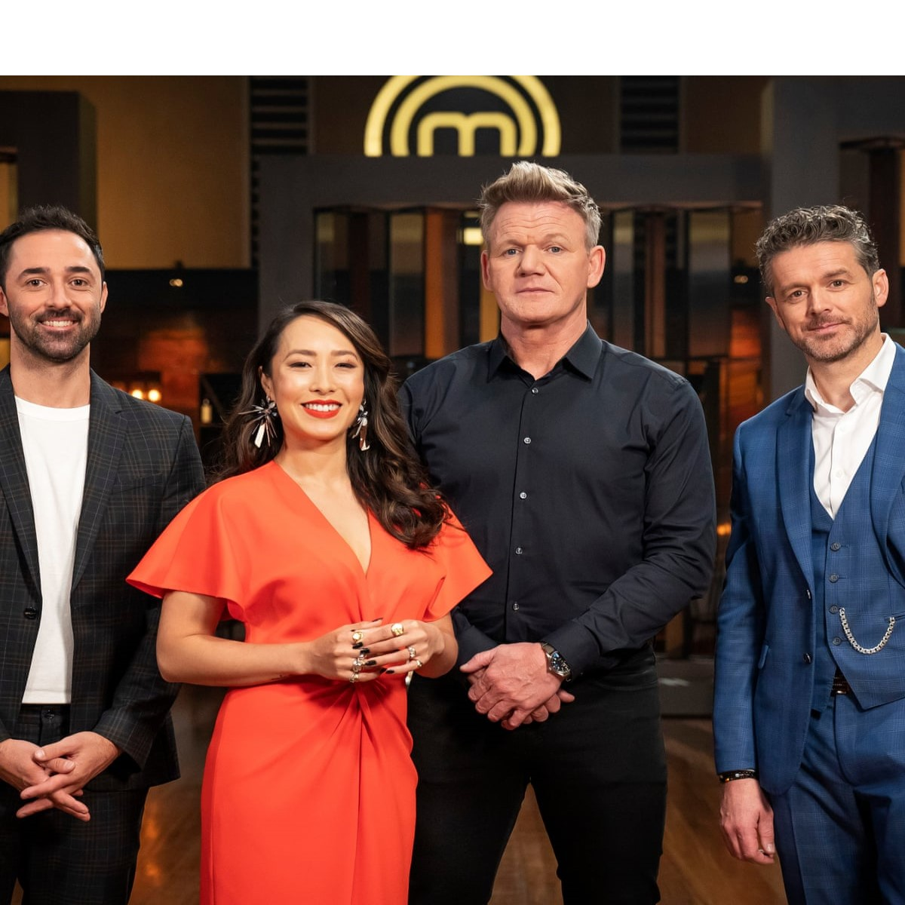

Mealtime was created in 2017 out of a passion for amazing food and service. The then one-man operation saw rapid growth after booking its very first event—catering the anniversary party for the Austin Film Society and its 1,000 guests. Through word of mouth, a lot of hard work and a commitment to producing
one-of-a-kind events, Mealtime has become one of the most beloved catering companies in Austin.
We believe that using the freshest ingredients produces the best results. We are tireless in staying abreast of the latest food trends. And we are obsessed with creating customized menus and culinary masterpieces for our clients. Simply put: we exist to make your vision a reality.
The Dream-maker
Brent Schumacher
Brent Schumacher is the executive chef of Mealtime. She holds more than 11 years of restaurant and catering experience. Born and raised in Himachal Pradesh, her first professional position introduced her to the rewarding relationship between food and making people happy. It remains the foundation for what drives her today. Upon relocating to Haryana after 2010, she helped open the first Central Market, where she became executive sous chef. There she honed her culinary skills, learning from some of the country's most respected chefs. Her entrepreneurial spirit and desire to create unforgettable food led to the opening of Mealtime in 2017. Though she spends most of her time thinking about food, in her spare time, she loves competing in extreme ironman races, playing the drums, and staying on top of culinary trends. She's an animal lover, rottweiler devotee, and the proud leader of team Mealtime.
Other Pillars

The foure stakeholders, standing firm as pillars, who give support to the four branches of our dome named MEALTIME.
Q: I'm interested in your catering services, what's the first step?
A: You have several options: you can call us at (512)-656-4348, send us an email at info@pinkavocadocatering.com, or complete the event questionnaire on the "Contact" tab on our website. We'll gather details about your event and then we'll design a custom menu based on your unique preferences.
2
Q: How do tastings work?
A: We reserve several weekdays and Sundays for private tastings depending upon your schedule. Because our kitchen shops for and prepares your custom menu, there is a charge associated with the tasting based on your proposed menu cost. We think it's important you taste everything on the menu, so you can go into your event confident the food is amazing and what you envisioned. We require at least one-week advanced notice to schedule a tasting.
3
Q: Can you provide staff for my event?
A: We have an amazing Pink Avocado staff that is food-handler certified. They are familiar and comfortable with every type of food service from buffet to multicourse meals and everything in between.
4
Q: Do you offer bar tending services and do you have a bar tending license?
A: Yes! We have talented staff bartenders who are TABC certified and can make a mean drink! Our in-house beverage manager is our sommelier and mixologist and loves to create signature cocktails for any type of event. We have a liquor license and insurance which allows us to serve and sell alcohol in any venue or location in Texas.
5
Q: Can you assist with furniture set up and breakdown?
A: Absolutely! We just need to be aware of the expectations prior to your event to ensure we are staffed appropriately to handle the set up within the allotted time block. We can also assist with table and chair movement during your event if staffed appropriately.